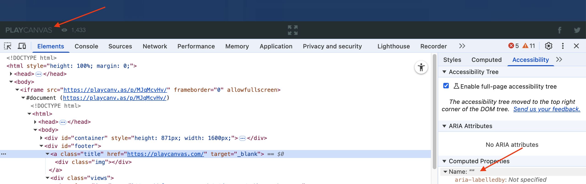
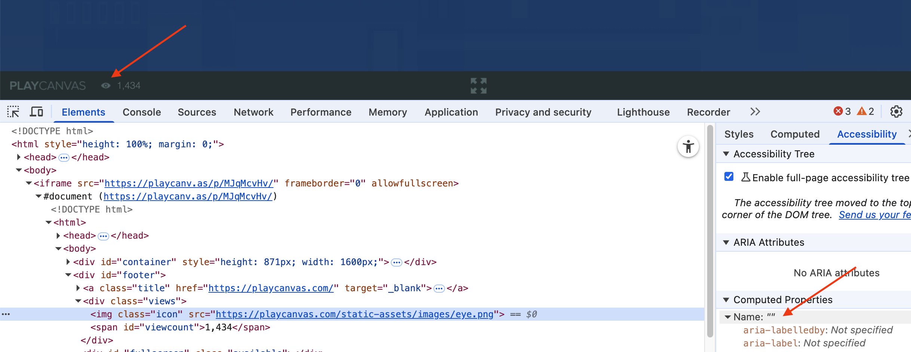
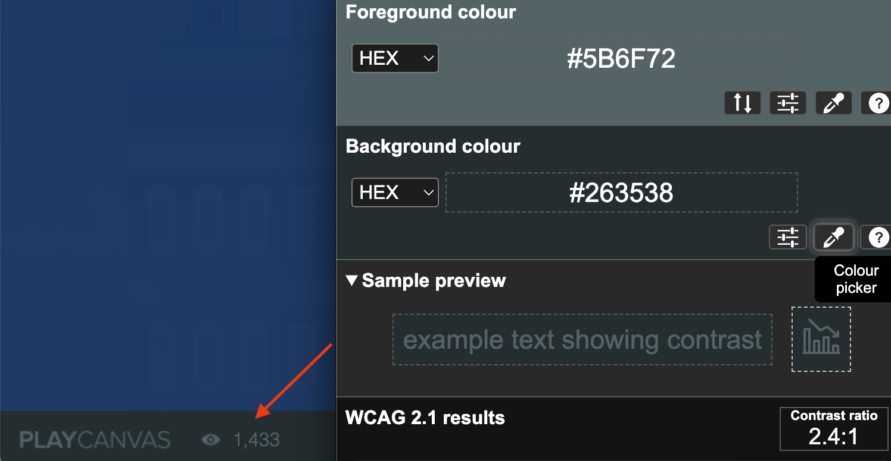
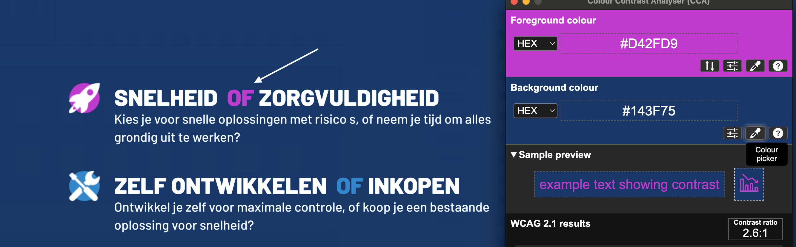
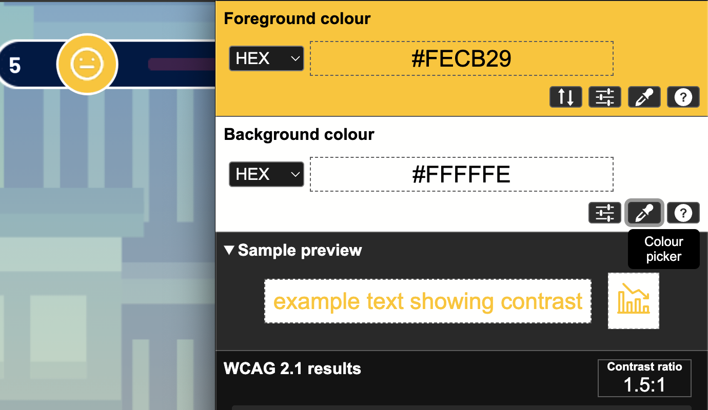
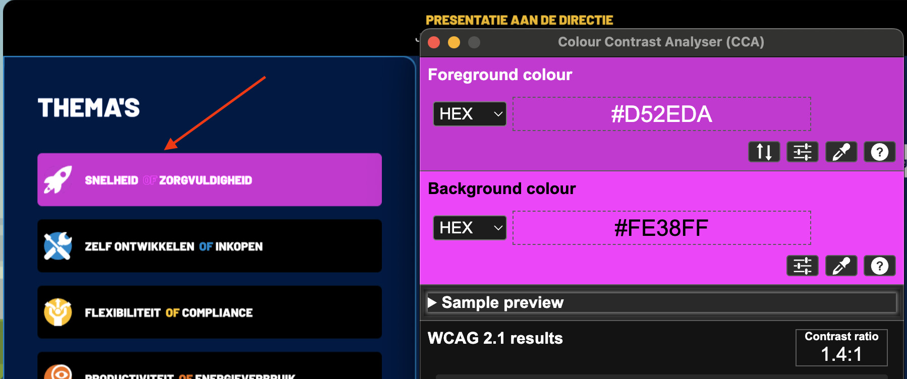

#1 - Het title-element verandert niet mee met dynamische content
De inhoud van pagina's verandert op deze website dynamisch, terwijl de URL hetzelfde blijft. Bij zo'n verandering moet de tekst in het title-element ook aangepast worden. Blinde bezoekers gebruiken vaak de paginatitel om te begrijpen waar de pagina over gaat. Een verouderde titel kan dan verwarrend zijn. Daarom moet dit element tekst bevatten die de actuele inhoud van de pagina duidelijk beschrijft.
Oplossing:
Zorg dat de tekst in het title-element mee verandert op het moment dat de inhoud van de pagina dynamisch wordt gewijzigd.
#2 - Het lang-attribuut ontbreekt
Op deze pagina ontbreekt het lang-attribuut op het html-element.
Als dit attribuut niet aanwezig is, kan voorleessoftware de pagina niet in de correcte taal voorlezen. De software weet dan niet wat de primaire taal van de pagina is.
Oplossing:
Zorg dat het lang-attribuut aanwezig is op het html-element, en dat dit attribuut de taalcode bevat van de taal van de pagina, bijvoorbeeld lang="nl" voor Nederlands.
#3 - Iframe heeft geen toegankelijke naam
Deze pagina bevat een iframe zonder beschrijving die zichtbaar is voor een schermlezer. Het title-attribuut ontbreekt.
Iframes moeten een goede beschrijving hebben. Die staat meestal in het title-attribuut van het iframe. Er moet in staan welk type inhoud het is (bijvoorbeeld een podcast of video), en waar het inhoudelijk over gaat. Deze beschrijving van de inhoud moet uniek en betekenisvol zijn. Door de beschrijving kunnen bezoekers met hulpsoftware beslissen of het de moeite waard is om de inhoud van het iframe te verkennen.
Oplossing:
Voeg het title-attribuut aan het iframe-element toe, en zet daar een tekst in waaruit blijkt welk type inhoud het iframe bevat, en waar het inhoudelijk over gaat.
#4 - De inhoud van deze website is niet toegankelijk voor een schermlezer
De inhoud van deze website wordt niet voorgelezen. De inhoud van deze website is in een <canvas> element opgenomen. Hulpsoftware krijgt geen informatie over de inhoud van dit element.
Oplossing:
Dit kan worden opgelost door de inhoud op een andere manier te presenteren.
Een canvas-element kan voor een deel toegankelijk worden gemaakt. Deze pagina's geven goede voorbeelden van hoe canvas toegankelijk gemaakt kan worden: https://www.html5accessibility.com/tests/canvas.html en https://pauljadam.com/demos/canvas.html.
#5 - Interactieve elementen hebben geen correcte rollen en namen
In het hele spel staan interactieve elementen. Bijvoorbeeld een "Start"-knop op het beginscherm waarop een bezoeker kan klikken.
Omdat deze knop echter binnen het canvas-element wordt getekend, ontbreekt een correcte semantische rol en een toegankelijke naam. Toetsenbordgebruikers, schermlezers of stemgestuurde bediening kunnen niet met dit element omgaan.
Alle interactieve componenten binnen het spel zijn gecodeerd binnen één enkel canvas-element. Het <canvas>-element heeft geen DOM- (Document Object Model) structuur. Juist die DOM-structuur is nodig voor hulpsoftware om een toegankelijk model op te bouwen voor gebruikers met een beperking. Zonder deze structuur is de inhoud die in de canvas wordt weergegeven in feite volledig ontoegankelijk.
Oplossing:
Overweeg dit spel op een andere manier te programmeren.
#6 - Zoomen is niet mogelijk in oudere browsers door bepaalde code
Op alle pagina's zijn in het head-element van de HTML-code maximum-scale=1 en user-scalable=no aanwezig.
Deze code zorgt ervoor dat een bezoeker in sommige browsers niet kan inzoomen.
Oplossing:
Verwijder deze code.
#7 - Link heeft geen toegankelijke naam

Op deze pagina fungeert het Playcanvas-logo in de footer als een link, maar de tekstalternatief ontbreekt, waardoor de link ontoegankelijk is.
De afbeelding is dus interactief. Er is geen tekstalternatief. Daardoor heeft de link geen inhoud. De link heeft geen toegankelijke naam en het doel van deze link is niet duidelijk (dit zorgt ook voor afkeur op succescriterium 2.4.4 en 4.1.2).
Hetzelfde probleem doet zich voor bij de logo's van Facebook en Twitter in de voettekst.
Oplossing:
Om deze link toegankelijk te maken, moet de afbeelding een tekstalternatief krijgen dat het linkdoel beschrijft.
Je lost dit op door de link te voorzien van toegankelijke, tekstuele inhoud. Dit kun je als volgt doen:
aria-labelgebruiken: voeg eenaria-label-attribuut toe aan heta-element met een beknopte beschrijving van de bestemming van de link.- Verborgen tekst aan de link toevoegen: voeg beschrijvende tekst toe in het
a-element, die je visueel verbergt met CSS (bijvoorbeeld met de class.sr-only).
#8 - Knop heeft geen toegankelijke naam
In de footer staat een knop om de inhoud schermvullend te bekijken. Het icoon heeft geen tekstalternatief waardoor de knop geen toegankelijke naam heeft.
Hierdoor begrijpen bezoekers die een schermlezer gebruiken niet wat de functie is van deze knop.
Oplossing:
Geef deze knop een toegankelijke naam, door gebruik te maken van een beschrijvende knoptekst, een aria-label of andere geschikte technieken.
#9 - Knop kan niet bediend worden met spatiebalk en Enter-toets
In de footer staan knoppen die niet toegankelijk zijn via het toetsenbord. Het gaat om de Facebook-knop en de knop om de inhoud schermvullend te bekijken.
Oplossing:
Zorg dat deze knoppen zowel met de spatiebalk als de Enter-toets bediend kunnen worden.
#10 - Afbeelding heeft geen tekstalternatief

In de footer heeft het icoontje van een oog geen tekstalternatief. Het alt-attribuut ontbreekt.
Een img-element moet altijd een alt-attribuut hebben. Bij een decoratieve afbeelding die geen betekenis overdraagt, laat je dit attribuut leeg. Dan staat er alt="". Bij een informatieve afbeelding voeg je een duidelijke beschrijving van de afbeelding toe.
Oplossing:
Voeg het alt-attribuut toe aan het img-element. Bij een decoratieve afbeelding laat je de waarde leeg, bij een informatieve afbeelding voeg je een duidelijke alternatieve tekst toe.
#11 - Kleurcontrast van tekst is te laag (tekst kleiner dan 24px en niet vetgedrukt)

Op deze pagina staat in de footer een grijze tekst (#5B6F72) met het aantal weergaven op een zwarte achtergrond (#263538). Het kleurcontrast is te laag: 2,4:1.
Oplossing:
Deze tekst is kleiner dan 24px en niet vetgedrukt, daarom moet het contrast minimaal 4,5:1 zijn. Op deze pagina staat een instructie die uitlegt hoe je kleurcontrast kunt testen: https://properaccess.nl/hoe-test-ik-kleurcontrast/.
#12 - De aangepaste socialmedia-iconen hebben te weinig contrast
Op deze pagina zijn in de footer de socialmedia-iconen grijs gemaakt (#5B6F72), waardoor het contrast met de zwarte achtergrond (#263538) te laag is: 2,4:1.
De standaardkleur van deze socialmedia-logo's hoeft niet aan de contrasteisen te voldoen, omdat ze worden gezien als 'kunstobjecten'. Maar als de kleuren worden aangepast, dan moeten die wél voldoen aan de minimale contrasteisen van 3,0:1.
Hetzelfde probleem doet zich voor bij het icoontje om de pagina op een volledig scherm te bekijken.
Oplossing:
Zorgen dat de aangepaste kleuren voldoen aan de minimale contrasteisen van 3,0:1.
#13 - Kleurcontrast van tekst is te laag (tekst groter dan 24px)

Op deze pagina, op het scherm "de 5 minuten ai manager", staan roze letters (#D42FD9) in de tekst "snelheid of zorgvuldigheid" op een blauwe achtergrond (#143F75). Het kleurcontrast is te laag: 2,6:1.
Oplossing:
Deze tekst is groter dan 24px, daarom moet het contrast minimaal 3,0:1 zijn. Op deze pagina staat een instructie die uitlegt hoe je kleurcontrast kunt testen: https://properaccess.nl/hoe-test-ik-kleurcontrast/.
#14 - De iconen hebben te weinig contrast

Bovenaan staan icoontjes van een gezicht en een grafiek die resultaten en vertrouwen weergeven. Deze icoontjes hebben in de standaardstatus een witte voorgrond op een gele achtergrond (#FECB29), met een te laag contrast van 1,5:1.
Het contrast tussen informatieve elementen van een grafiek moet minimaal 3,0:1 zijn, zodat bezoekers ze van elkaar kunnen onderscheiden.
Oplossing:
Zorgen dat de aangepaste kleuren voldoen aan de minimale contrasteisen van 3,0:1.
#15 - Kleurcontrast van tekst is te laag (tekst groter dan 24px)

Op het scherm met de eindpresentatie onder "Thema's", staan roze letters (#D52EDA) in de tekst "snelheid of zorgvuldigheid" op een roze achtergrond (#FE38FF). Het kleurcontrast is te laag: 1,4:1.
Oplossing:
Deze tekst is groter dan 24px, daarom moet het contrast minimaal 3,0:1 zijn. Op deze pagina staat een instructie die uitlegt hoe je kleurcontrast kunt testen: https://properaccess.nl/hoe-test-ik-kleurcontrast/.